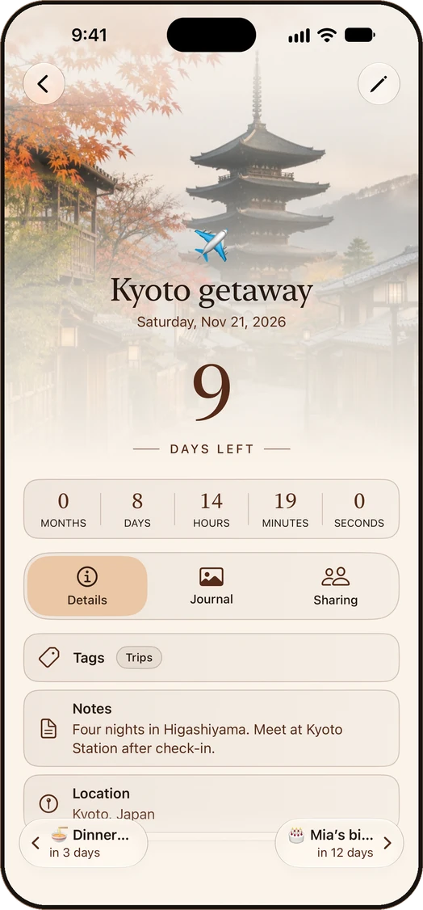

Personal reminders
Write a reminder in your own words and choose when it arrives. Set birthdays and anniversaries to repeat each year.
Give birthdays, trips, and anniversaries their own cover photos and reminders. Count down together with friends and family.
For iPhone, iPad & Apple Watch

Write a reminder in your own words and choose when it arrives. Set birthdays and anniversaries to repeat each year.
Invite friends and family to a countdown. Everyone can add photos and notes to the same journal, from the first plans to the trip home.
With Tymelune Pro, pin upcoming dates to your screen or watch a Dotfield grid fill in as the day gets closer.
Your countdowns sync through iCloud. Plan a trip on iPad, check the date on Apple Watch, or follow the final hours with a Live Activity on a supported iPhone.